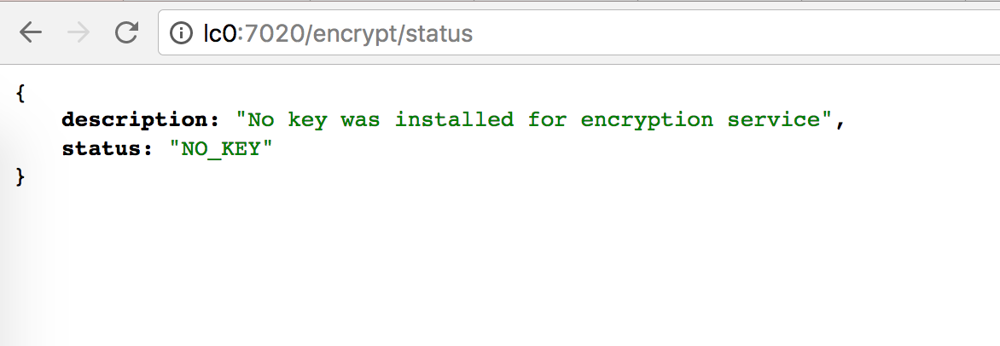
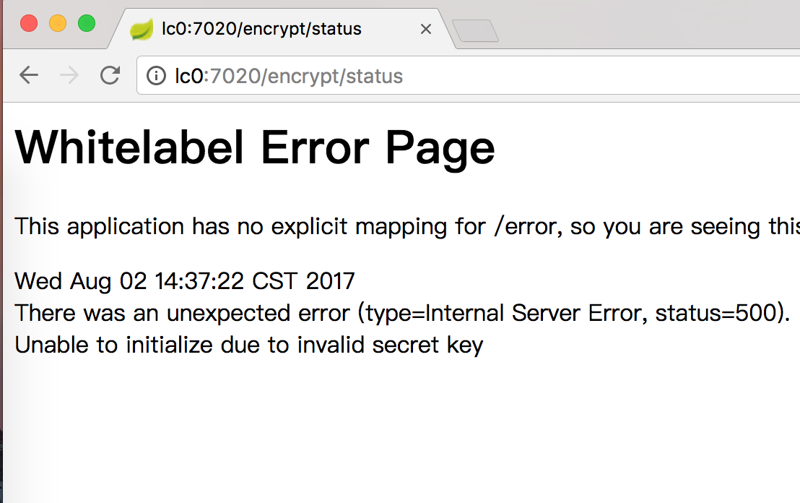
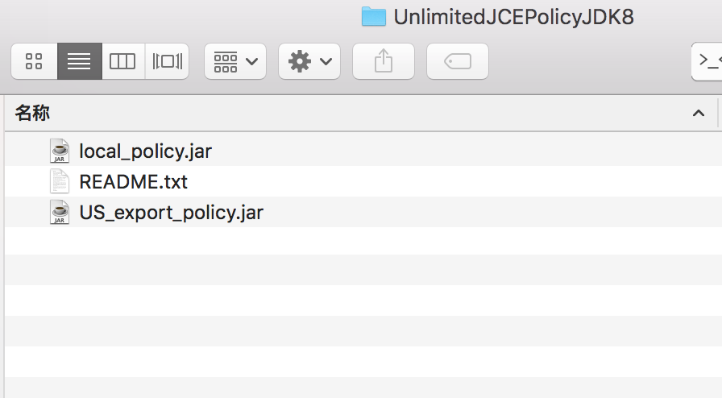
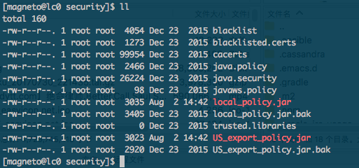
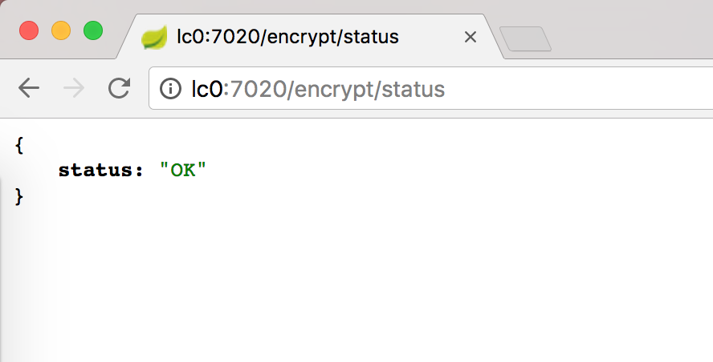
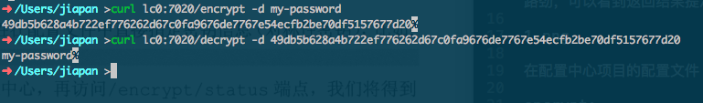
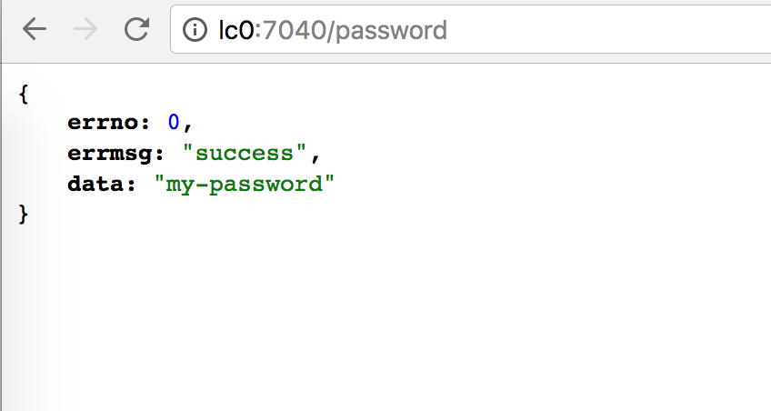

有时候我们会放一些敏感信息到配置中心里，比如线上数据库密码等，我们直接将敏感信息以明文的方式存储于微服务应用的配置文件中是非常危险的，Spring Cloud Config 提供了对属性进行加密解密的功能，以保护配置文件中的信息安全。
在 Spring Cloud Config 中通过在属性值前使用 {cipher} 前缀来标注该内容是一个加密值，当微服务客户端加载配置时，配置中心就会自动为带有 {cipher} 前缀的值进行解密。这里有个需要注意的地方，如果配置文件使用的是 yml 格式的话，一定要用引号将内容包裹起来，properites 的配置文件不需要。如：
1 | spring: |
Spring Cloud Config 同时支持对称加密和非对称加密，下边我们只介绍对称加密的使用方式，一般来说只要密钥不被泄露，对称加密的方式就足够了。
首先我们访问配置中心的 /encrypt/status 路径，可以看到返回结果提示我们还没有设置密钥，需要我们在配置文件中进行设置。

在配置中心项目的配置文件 application.yml 中加入以下配置即可（密钥根据根据需要自行修改）:
1 | encrypt: |
然后重新编译后运行，再次访问 /encrypt/status 看到如下错误：

这是因为在 JRE 中，自带的 JCE 默认是有长度限制的版本，我们需要从 Oracle 官网下载不限长度的版本：http://www.oracle.com/technetwork/java/javase/downloads/jce8-download-2133166.html ，下载解压后可以看到下边三个文件：

我们需要将 local_policy.jar 和 US_export_policy.jar 两个文件复制到$JAVA_HOME/jre/lib/security
目录下，在复制前，最好将之前的两个文件进行备份，我将这两个文件放到了 lc0 机器的相应目录中，现在目录中的文件如下：

重新运行配置中心，访问 /encrypt/status 可以看到密钥已经生效了，并且配置中心已经支持对配置进行加密了。

此时，我们配置中心的加密解密功能就已经可以使用了，可以访问 /encrypt 和 /decrypt 来使用加密和解密功能。这两个端点都是 POST 请求，我们来用 curl 测试下：

我们用 my-password 为明文生成了49db5b628a4b722ef776262d67c0fa9676de7767e54ecfb2be70df5157677d20
这个密文，同时又测试了解密功能。
下边我们在实际情景中运用一下加密解密功能
在 GitLab 中修改 app-a 的 dev 配置文件，加上如下配置：
1 | password: '{cipher}49db5b628a4b722ef776262d67c0fa9676de7767e54ecfb2be70df5157677d20' |
然后在 app-a 中新加一个 Controller:
1 | @Value("${password}") |
重新编译后运行，访问它的 /password 路径，可以看到结果：

我们通过配置 encrypt.key 参数来指定密钥的实现方式采用了对称加密。这种方式实现起来比较简单，只需要配置一个参数即可。另外，我们也可以使用环境变量 ENCRYPT_KEY 来进行配置，让密钥信息外置。